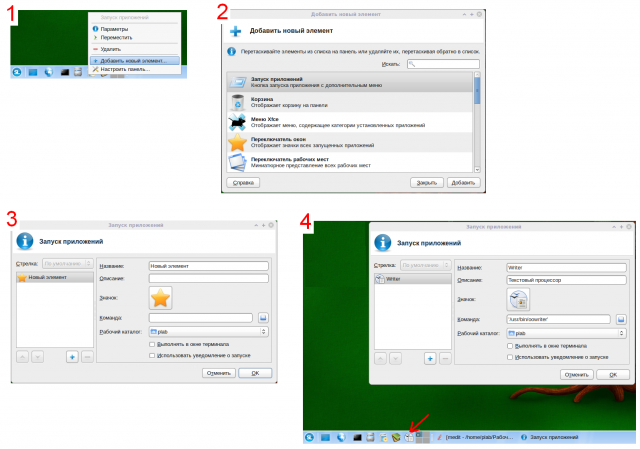

Работа в Simply Linux
При работе в Linux часто возникает потребность что-либо настоить или сделать более удобным.
Здесь я буду выкладывать то, с чем мне пришлось столкнуться.
Xfce. Добавление кнопки быстрого запуска

В графической среде KDE добавить значек быстрого запуска приложения на панель очень просто (находим в меню -> правой кнопкой ? добавить...). В среде Xfce такой возможности нет. В Xfce кнопку быстрого запуска приложения можно получить через окно добавления различных элементов на Главную панель. Для этого необходимо выполнить следующие действия:
- Щелкните правой кнопкой мыши в любом месте главной панели. Желательно попасть именно туда, где планируется разместить кнопку. Иначе после всего нужно будет переместить значок (правой кнопкой по нему ? Переместить).
- В появившемся контекстном меню выберите пункт Добавить новый элемент. Появится одноименное диалоговое окно со списком возможных элементов Главной панели. Выберите пункт Запуск приложений и нажмите кнопку Добавить.
- Появляется окно Запуск приложений для настройки кнопки быстрого запуска. Здесь следует обязательно прописать Название элемента и Команду, запускающее приложение. Команду (путь к файлу) можно выбрать в списке, открывающемся при щелчке на изображении папки. Файлы отсортированы по алфавиту. Также желательно сменить значок.
- После установки всех настроек следует нажать на кнопку ОК.
Как я настраивала интернет в Linux (Simply)
Интернет у меня через VPN. Открываю браузер и проверяю работу локальной сети. Для этого пытаюсь зайти на сайт провайдера. В случае успеха, перехожу к настройки доступа в Интернет.
- Щелкаю левой кнопкой мыши по двум черным квадратикам в нижнем правом углу (это как бы компьютеры). В появившемся меню выбираю Настроить VPN.
- Открывается окно Сетевые соединения как раз на вкладке VPN. Нажимаю на кнопку Добавить.
- Далее предлагается выбрать тип соединения VPN. На сайте провайдера в описании настроек доступа указан протокол PPTP. Его и выбираю.
- В диалоговом окне Изменение соединения VPN на первой вкладке в текстовые поля Имя пользователя и Пароль очевидно, что нужно вписать. А вот в поле Шлюз вписываю то, что нужно было бы вписать в поле Имя компьютера или IP-адрес при настройке аналогичного соединения в Windows XP. В принципе это все, хотя на второй вкладке возможно нужно будет правильно установить флажки.
- При подключении появляется окно с вопросом разрешения доступа. Нажатие на кнопку Разрешить навсегда позволит избежать появление этого окна в дальнейшем.
- После настройки соединения, чтобы его запустить достаточно нажать левой кнопкой мыши на иконку с двумя как_бы_компьютерами в нижнем правом углу и выбрать имя настроенного соединения VPN.
- ps. Появится окно запроса пароля на доступ. Это вовсе не тот пароль, который предоставляет провайдер, а тот который вы ввели после настройки соединения (если вводили). Если не вводили, а окно появилось, введите пароль текущего пользователя Linux.
Примечание. Если Интернет у вас работает через DSL (ADSL), то, выполнив пункт 1 и 2, перейдите на вкладку DSL и впишите адреса. Хотя, если при установки Linux они были уже вписаны, то Интернет должен работать сразу.